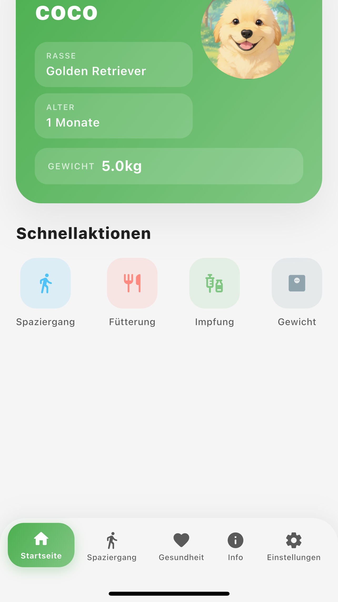
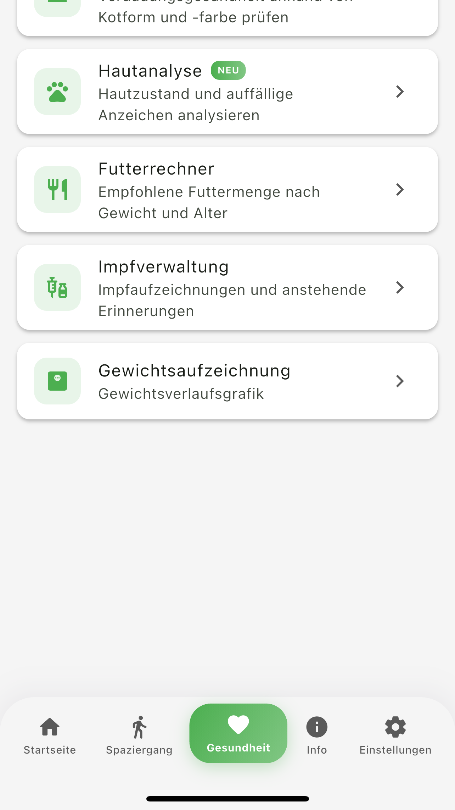
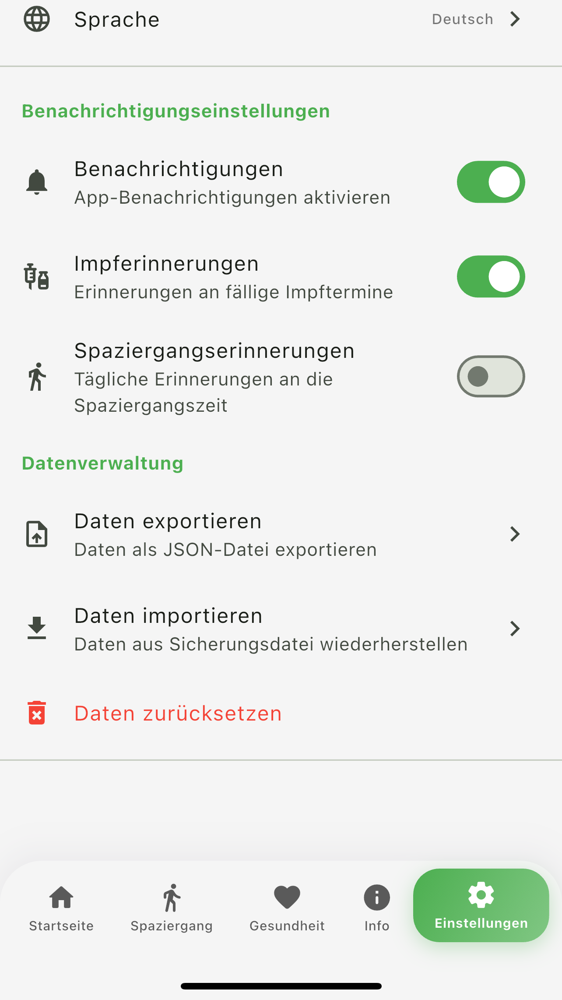
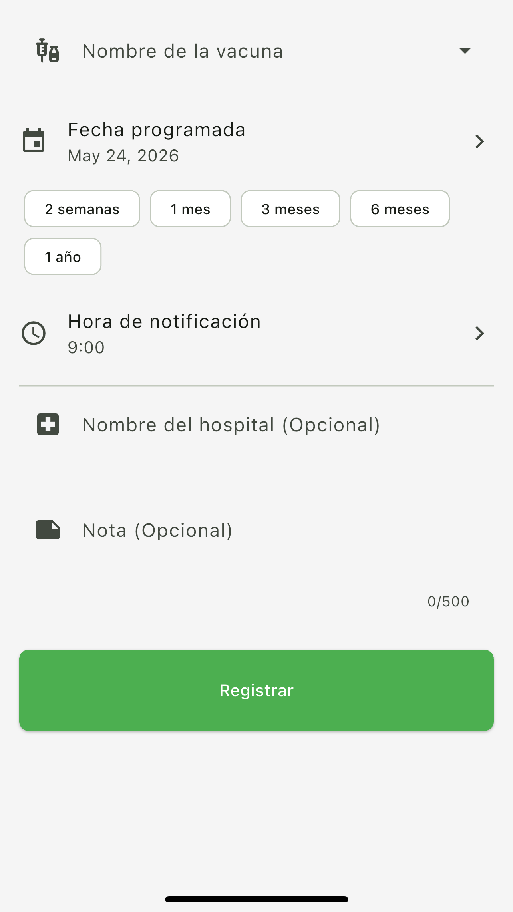

Verfügbar
PetCare
Die Alles-in-einem App für Spaziergänge, Gesundheit und Impfungen Ihres Haustiers.
Die KI analysiert Haut und Kot und prüft so den Gesundheitszustand.
Die Alles-in-einem App für Spaziergänge, Gesundheit und Impfungen Ihres Haustiers.
Die KI analysiert Haut und Kot und prüft so den Gesundheitszustand.
PetCare ist eine umfassende Gesundheits-App für Halterinnen und Halter von Hunden und Katzen. Sie erfassen täglich Futter, Wasser, Kot, Aktivität und Befinden, verfolgen die Gewichtsentwicklung als Diagramm und verwalten dank GPS auch Route, Distanz und Dauer der Spaziergänge an einem Ort.
Sie können mehrere Tiere anlegen und deren Daten getrennt verwalten sowie Impfungen und den nächsten Impftermin hinterlegen und sich daran erinnern lassen. Dazu kommen Werkzeuge für den Alltag: Futtermengenrechner, Altersumrechnung, Rasseinformationen und die standortbasierte Tierarztsuche.
Für die KI-Gesundheitsanalyse fotografieren Sie Kot oder Haut und erhalten eine Einschätzung (normal, Achtung, kritisch), die erkannten Auffälligkeiten, Hinweise für Sie als Halter und eine Empfehlung, ob ein Tierarztbesuch ratsam ist. Diese Analyse ist kein Medizinprodukt und dient nur zur Orientierung — für eine gesicherte Diagnose wenden Sie sich bitte an eine Tierärztin oder einen Tierarzt.
Alles, was Sie für die Pflege Ihres Haustiers brauchen
Route, Distanz und Dauer werden automatisch aufgezeichnet. Auf Wunsch erinnert Sie die App täglich an die Gassi-Zeit.
Die empfohlene Futtermenge wird aus Gewicht, Alter und Aktivität berechnet; die Anzahl der Mahlzeiten pro Tag lässt sich einstellen.
Erfassen Sie Impfstoff, Impfdatum, nächsten Termin, Praxis und Notizen — mit Erinnerung, damit kein Termin verloren geht.
Verfolgen Sie die Gewichtsentwicklung als Diagramm und nutzen Sie sie für die Gesundheitsvorsorge.
Fotos von Kot und Haut werden analysiert: Einschätzung (normal, Achtung, kritisch), Auffälligkeiten, Hinweise und eine Empfehlung zum Tierarztbesuch. Nur zur Orientierung — für eine gesicherte Diagnose fragen Sie Ihre Tierärztin oder Ihren Tierarzt.
Die KI verwandelt Fotos Ihres Tieres in verschiedene Stile — König, Ritter, Astronaut und mehr.
Finden Sie Tierarztpraxen in Ihrer Nähe auf Basis Ihres aktuellen Standorts auf der Karte.
Merkmale und Hinweise zu 80 Hunde- und 54 Katzenrassen auf einen Blick.
Schlichtes Design, umfangreiche Funktionen

Startseite

Spaziergang

Gesundheit

Weitere Funktionen

Impfung eintragen

Haustier anlegen

Einstellungen · Backup
Mit erweiterten Funktionen für Ihr Haustier sorgen
Nutzen Sie die KI-Gesundheitsanalyse häufiger und die App ganz ohne Werbung.
Oberfläche und KI-Analyse in 5 Sprachen lokalisiert
Die wichtigsten Fragen rund um PetCare
Eine Alles-in-einem App, mit der Sie Spaziergänge, Gesundheit und Impfungen Ihres Haustiers an einem Ort verwalten. Sie bietet GPS-Spaziergangsaufzeichnung, Futtermengenrechner, Gewichtsverlauf, Impferinnerungen, KI-Gesundheitsanalyse, Tierarztsuche und Rasseinformationen.
Ja. Sie können sowohl Hunde als auch Katzen verwalten. Die App enthält Rasseinformationen und Hinweise zu 80 Hunde- und 54 Katzenrassen.
Die App steht im App Store und bei Google Play zum Download bereit und läuft damit sowohl auf iOS- als auch auf Android-Geräten.
Ja, der Download und die Nutzung sind kostenlos. Wer die KI-Gesundheitsanalyse häufiger nutzen und auf Werbung verzichten möchte, kann das Premium-Abo PetCare Pro abschließen.
Ein einzelnes Foto genügt, um Haut und Kot Ihres Tieres zu analysieren und frühe Auffälligkeiten zu erkennen. Mit dem Pro-Abo sind bis zu 50 Analysen pro Monat möglich.